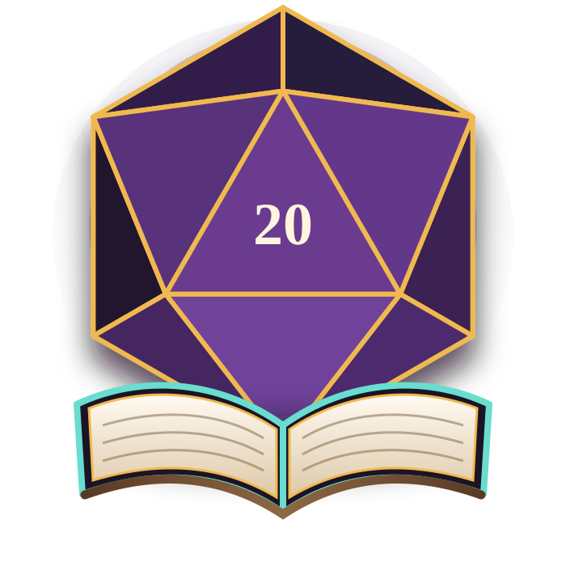

Beginner D&D One-Shots
Learn the basics with a ready-to-play character, patient guidance, and a complete story in one session.
- No books required
- Dice and characters provided
- Adult, teen, and family options
Florence, South Carolina · The Pee Dee
A welcoming local hub for tabletop role-playing games—built for first-time players, experienced storytellers, families, horror fans, and everyone ready to roll.

Find your table
Every listing will clearly show age range, experience level, tone, accessibility details, content notes, materials, and open seats.
Learn the basics with a ready-to-play character, patient guidance, and a complete story in one session.
Follow clues, question witnesses, and confront the unknown with clear expectations and table safety tools.
Get mentoring, event support, accessibility guidance, and practical workshops for running excellent games.
New players welcome
Choose a game, reserve a seat, and arrive curious. We will make sure you know what to bring, what to expect, and who will be at the table.
Get Launch UpdatesFantasy, horror, family-friendly play, workshops, campaigns, or a single-night adventure.
See the venue, access details, game tone, age group, materials, and community expectations.
Join a welcoming group with a prepared Game Master and a clear path to your next game.
The library will grow
D&D and Call of Cthulhu are only the beginning. Members will help choose the next systems, events, and workshops.
Workshops, indie games, and local creator spotlights will be added as the community grows.
Built to last
The goal is bigger than filling seats. We are creating a dependable local network where people can learn, volunteer, make friends, and keep coming back.
Published conduct standards, consent tools, content notes, and private reporting.
Keyboard-friendly pages, readable contrast, and practical venue access details.
Guardian-managed registration, public venues, and clearly supervised programs.
Seeking libraries, businesses, restaurants, and community spaces across Florence.
Help build the first tables
This preview form does not send or store information yet. It demonstrates the launch-list experience we will connect next.